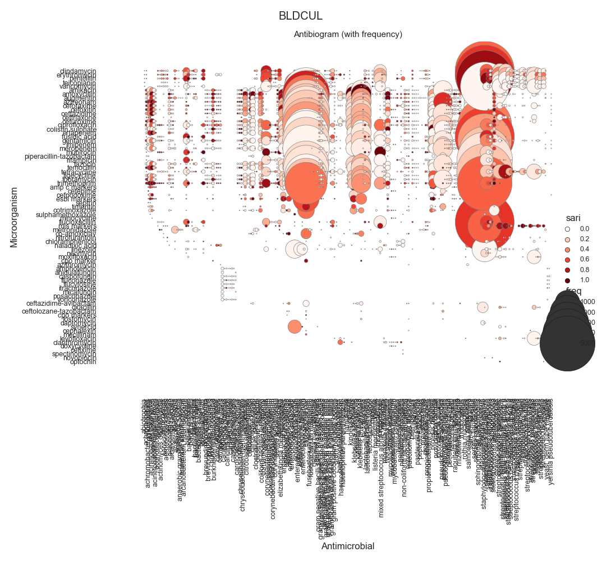
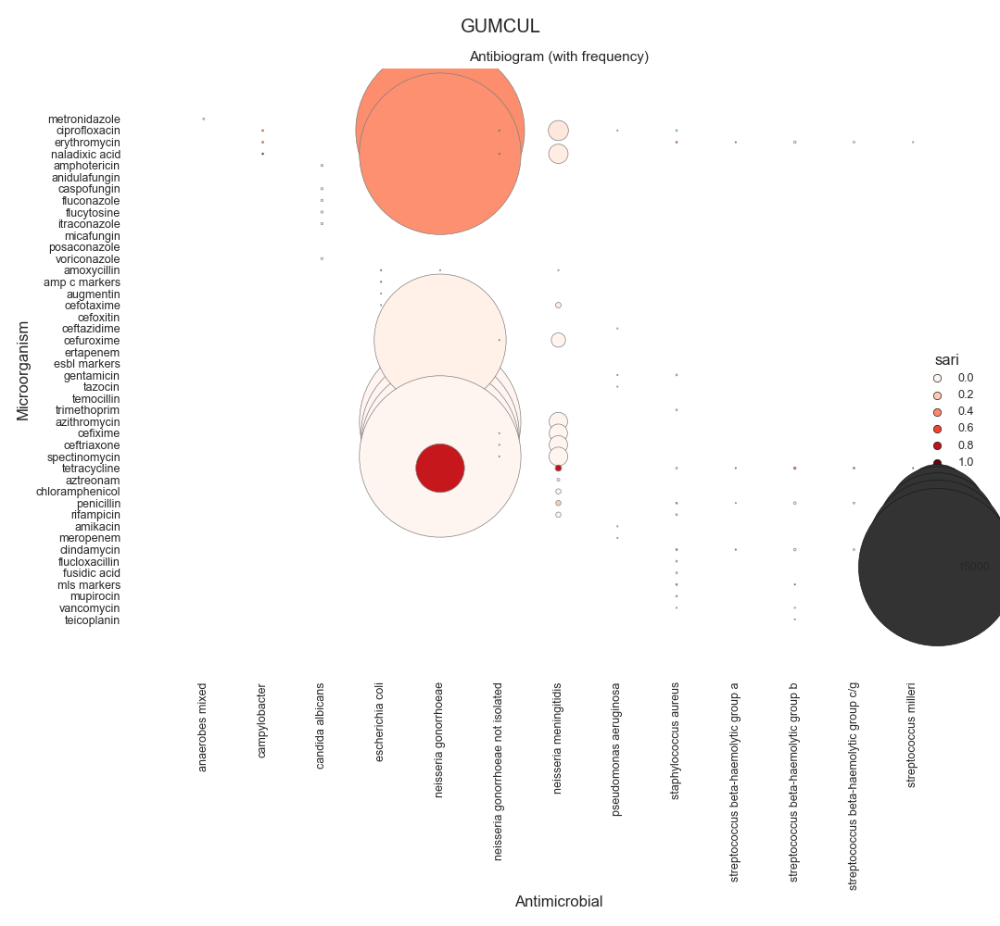
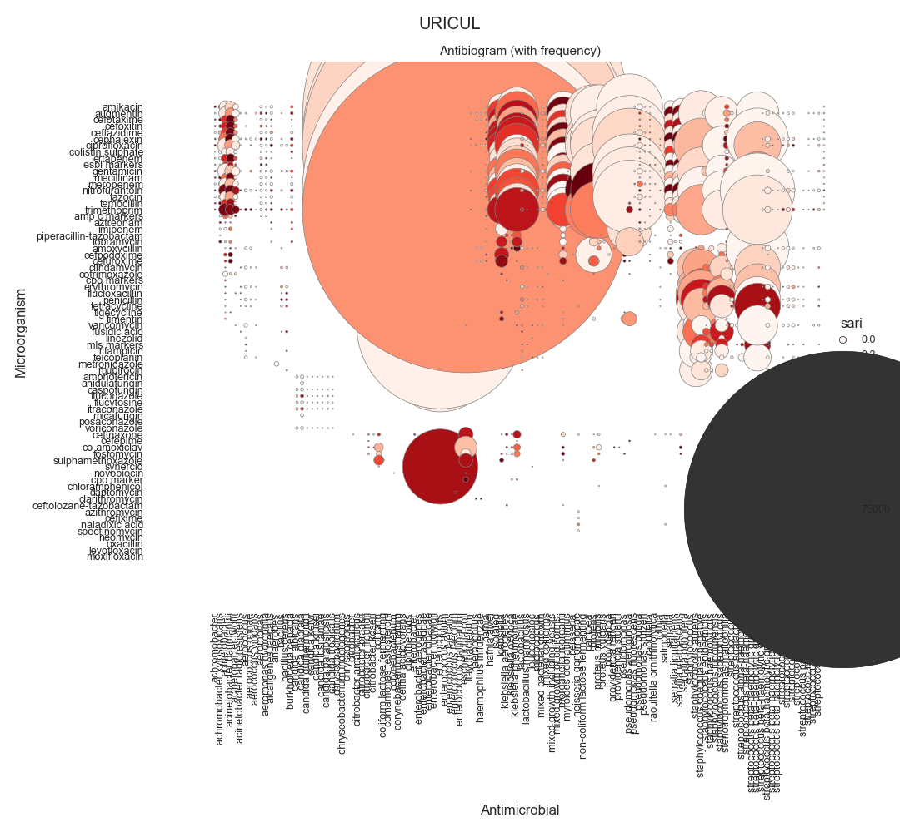
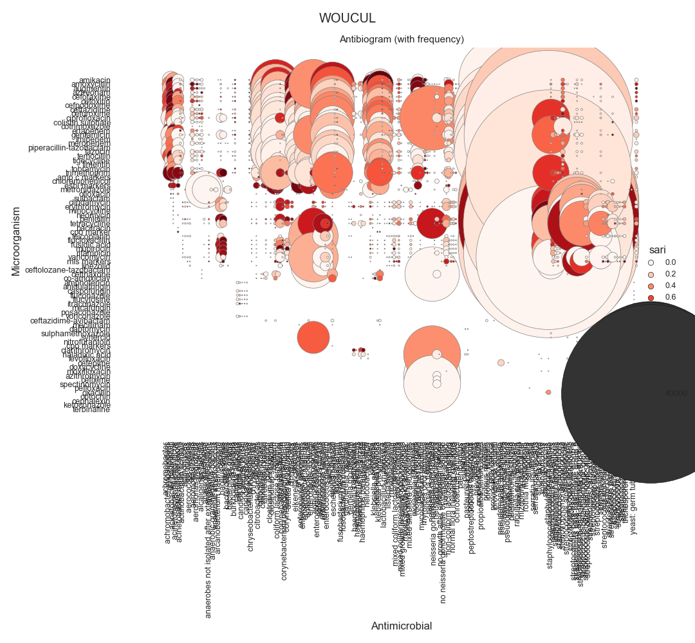

Note
Click here to download the full example code
SARI - Antibiogram (relmap)¶
Todo
Explain and Simplify
- 
- 

- 
- 
Out:
SARI (overall):
sensitivity fix hide highly resistant intermediate not done resistant sensitive freq sari
specimen_code microorganism_name antimicrobial_name
BLDCUL abiotrophia clindamycin 0.0 0.0 0.0 0.0 0.0 0.0 1.0 1.0 0.0000
erythromycin 0.0 0.0 0.0 0.0 0.0 1.0 0.0 1.0 1.0000
penicillin 0.0 0.0 0.0 0.0 0.0 0.0 1.0 1.0 0.0000
teicoplanin 0.0 0.0 0.0 0.0 0.0 1.0 0.0 1.0 1.0000
vancomycin 0.0 0.0 0.0 0.0 0.0 0.0 1.0 1.0 0.0000
... ... ... ... ... ... ... ... ... ...
WOUCUL yeasts tetracycline 0.0 0.0 0.0 0.0 0.0 6.0 15.0 21.0 0.2857
tigecycline 0.0 0.0 0.0 2.0 0.0 0.0 8.0 10.0 0.2000
tobramycin 0.0 0.0 0.0 0.0 0.0 4.0 6.0 10.0 0.4000
trimethoprim 0.0 0.0 0.0 0.0 0.0 1.0 20.0 21.0 0.0476
vancomycin 0.0 0.0 0.0 0.0 0.0 0.0 6.0 6.0 0.0000
[10991 rows x 9 columns]
12 13 14 15 16 17 18 19 20 21 22 23 24 25 26 27 28 29 30 31 32 33 34 35 36 37 38 39 40 41 42 43 44 45 46 47 48 49 50 51 52 53 54 55 56 57 58 59 60 61 62 63 64 65 66 67 68 69 70 71 72 73 74 75 76 77 78 79 80 81 82 83 84 85 86 87 88 89 90 91 92 93 94 95 96 97 98 99 100 101 102 103 104 105 106 107 108 109 110 111 112 113 114 115 116 117 118 119 120 121 122 123 124 125 126 127 128 129 130 | # Libraries
import sys
import glob
import numpy as np
import pandas as pd
import seaborn as sns
import matplotlib as mpl
import matplotlib.pyplot as plt
# Import own libraries
from pyamr.core.freq import Frequency
from pyamr.core.sari import SARI
from pyamr.datasets.load import load_data_nhs
# -------------------------
# Configuration
# -------------------------
# Configure seaborn style (context=talk)
sns.set(style="white")
# Set matplotlib
mpl.rcParams['xtick.labelsize'] = 9
mpl.rcParams['ytick.labelsize'] = 9
mpl.rcParams['axes.titlesize'] = 11
mpl.rcParams['legend.fontsize'] = 9
# Pandas configuration
pd.set_option('display.max_colwidth', 40)
pd.set_option('display.width', 300)
pd.set_option('display.precision', 4)
# Numpy configuration
np.set_printoptions(precision=2)
# --------------------------------------------------------------------
# Main
# --------------------------------------------------------------------
# Load data
data, antibiotics, organisms = load_data_nhs()
# Count records per specimen code
specimen_code_count = data \
.groupby('laboratory_number').head(1) \
.specimen_code.value_counts(normalize=True) \
.sort_values(ascending=False)
# Filter most frequent specimens
data = data[data.specimen_code.isin( \
specimen_code_count.index.values[:5])]
# Create sari instance
sari = SARI(groupby=['specimen_code',
'microorganism_name',
'antimicrobial_name',
'sensitivity'])
# Compute SARI overall
sari_overall = sari.compute(data,
return_frequencies=True)
# Show
print("SARI (overall):")
print(sari_overall)
# -------------------------------------------
# Plot
# -------------------------------------------
# Reset
sari_overall = sari_overall.reset_index()
# Loop for each specimen
for specimen, df in sari_overall.groupby(by='specimen_code'):
# ------------
# Plot Heatmap
# ------------
# Create colormap
cmap = sns.color_palette("Reds", desat=0.5, n_colors=10)
# Configura
sizes = (df.freq.min(), df.freq.max())
# Plot
g = sns.relplot(data=df.reset_index(), x='microorganism_name',
y='antimicrobial_name', hue="sari", size="freq",
palette='Reds', hue_norm=(0, 1), edgecolor="gray",
linewidth=0.5, sizes=sizes, # size_norm=sizes,
dashes=True, legend='brief', height=10)
# Configure plot
g.set(xlabel="Antimicrobial",
ylabel="Microorganism",
title='Antibiogram (with frequency)',
# aspect='equal'
)
g.despine(left=True, bottom=True)
g.ax.margins(.1)
# Configure xticks
for label in g.ax.get_xticklabels():
label.set_rotation(90)
# Configure legend
for artist in g.legend.legendHandles:
artist.set_edgecolor("k")
artist.set_linewidth(0.5)
# Superior title
plt.suptitle(specimen)
# Add grid lines.
# plt.grid(linestyle='-', linewidth=0.5, color='.7')
# Adjust
plt.tight_layout()
# Show
plt.show()
|
Total running time of the script: ( 0 minutes 49.377 seconds)